お気に入り
最近遊んだ
ゲーム一覧
-
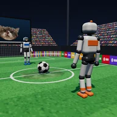
ロボサッカーロボットを動かして、相手ロボからゴールを決めよう
-
起き上がりロボ
タップした所にボールを投げて、ロボットをよろけさせよう
-
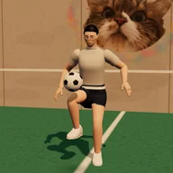
リフティング両足をドラッグして、サッカーボールを落とさずに蹴り続けるゲーム。
-
ど真ん中外交
押して押されて、首脳写真のど真ん中を奪え
-
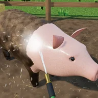
泥んこ豚洗い泥だらけの豚にホースで水をかけて、ピカピカに洗い上げよう
-
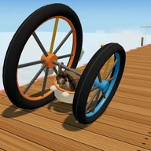
どこまで車輪左右の車輪を前進とバックで操り、仕掛けだらけの無限の道をどこまで進めるか挑む
-
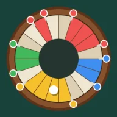
ピンルーレットピンで陣地を張って、玉の行き先に賭ける4人対戦
-
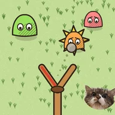
最強パチンコスリングショットで弾を飛ばし、押し寄せる敵を倒し続ける
-
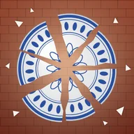
お皿割りボールを投げてお皿を割る。当たった場所で割れ方が変わる。
-
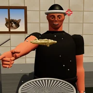
家系修行平ざるで麺を何回バウンドさせられるか。落としたら大将がブチギレ。
-
ロケットメーカー
好きなパーツを組み合わせてロケットを作り、どこまで高く飛べるか挑戦
-
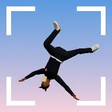
寝坊モデル寝坊したモデル、雑誌の撮影に滑り込め
-
丸のみペリカン
飛んでくる物をくちばしで丸のみするペリカン
-
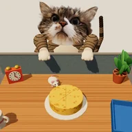
猫の手も借りたいチーズを狙うネズミを、借りた猫の手で止める
-
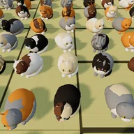
香箱千匹1000匹の香箱座りの中から、同じ柄の猫を探せ
-
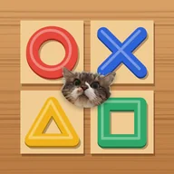
◯×△◻︎ゲーム記号を3つ並べて猫と勝負
-
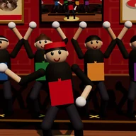
火鍋ダンス研修先輩と同じ振り付けを踊って、最後に研修ビデオで答え合わせ
-
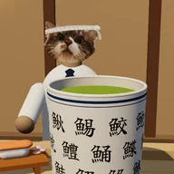
湯呑みマスターお題の魚の漢字を、寿司屋の湯呑みから探そう
-
星座メーカー
夜空の星をつないで、自分だけの星座を作ろう
-
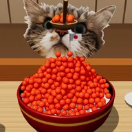
いくら丼はいくらいくらをこぼさず、どこまで高く盛れるか。
-
スイングバイ配達
宇宙人の注文を、惑星の重力で曲げて届けろ。
-
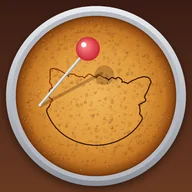
カタヌキメーカー好きな画像が型抜きになる。割らずに抜けるか。
-
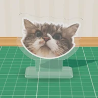
アクスタメーカー好きな画像を塗って切り抜き、3Dのアクスタにして机に並べる
-
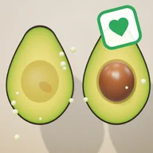
アボカドマッチング10秒で、見た目だけで食べ頃のアボカドを見抜け
-
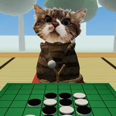
なんとなくリバーシパチンコで石を飛ばして置く、マスのないリバーシ
-
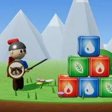
落ちもの勇者属性の石を積んで1列消すと、勇者がその属性で攻撃する落ちものRPG
-
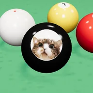
無限反発ビリアード打てるのは1回だけ。球は永遠に止まらない
-
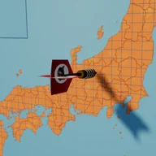
ダーツの旅日本地図にダーツを投げて、刺さった町のWikipediaへ
-
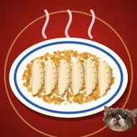
餃子円卓を回して、最後の1個の餃子を食べたら勝ち
-
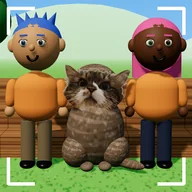
集合写真全員が目を開けた一瞬にシャッターを切れ
-
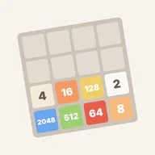
回転2048回して落として合体させる
-
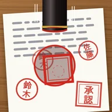
ハンコう期押されてたまるか。
-
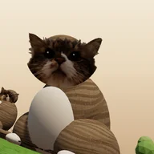
めい電車猫に襲われないよう駅まで急げ
-
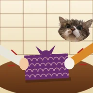
つまらないものですが手土産を押し付け合う
-
プカプカ界隈
3Dの水をかき混ぜて遊ぶ
-
顔カーリング
氷の上で顔のパーツを滑らせて、のっぺらぼうに顔を作れ。
-
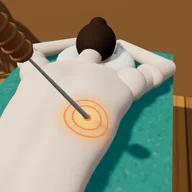
鍼ダーツうつ伏せの背中のツボへ、鍼を1本だけ投げる。
-
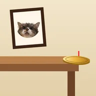
顔面スレスレコインをはじいて机の端ギリギリで止めろ。落ちたら死ぬ。
-
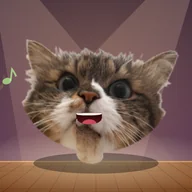
歌う顔写真好きな顔写真を切り抜いて、人工音声で歌わせよう
-
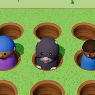
モグラ叩かないで出てくるモグラは叩かず、人間だけを叩こう
-
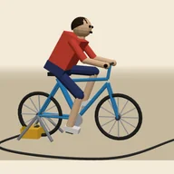
人力発電ペダルを回して、いろんな機械を動かそう
-
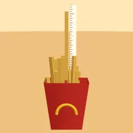
ポテトおみくじポテトを1本引っぱって、何cmか競おう
-
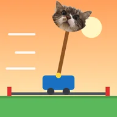
倒立振子ゲーム台車を動かして、振り子を立てたまま耐えよう
-
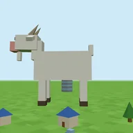
巨大ヤギ草を食わせてヤギをとんでもないデカさにする
-
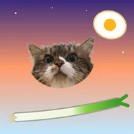
めいトランポリン線を引いてトランポリンを作り、ひたすら上を目指す
-
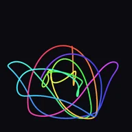
三重振り子アート三重振り子の軌跡で絵を描こう
-
コーラ振り子
三重振り子でコーラを振り回して、空のかなたへ飛ばそう
-
前髪カット
写真の顔に3Dの髪をのせて好きに切ろう
-
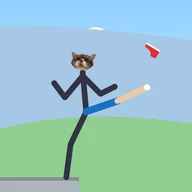
振り子靴飛ばし脚の形を決めて、タップで蹴り出し、もう一度タップで靴を飛ばそう
-
紙飛行機ゲーム
スリングで飛ばして、機首を操って遠くまで飛ばそう
-
2択ゲーム
2つのドアから当たりを選び続けよう
-
シミュレーター" width="72" height="72" loading="lazy">
火鍋アルバイト
シミュレーター両手をドラッグして、火鍋の麺を踊りながら伸ばそう
-
画像ピザ生地
画像をのばしてピザ生地にして焼こう
-
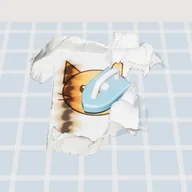
画像アイロンシワシワのTシャツにアイロンをかけて伸ばそう
-
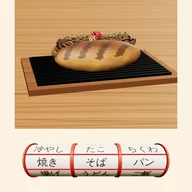
焼きそばパン焼き・そば・パンを目押しで止める3Dスロット
-
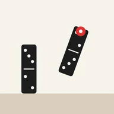
ドミノ立て押したところが支点。揺れるドミノを倒さず立て続けよう
-
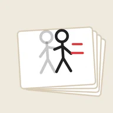
パラパラ漫画メーカーコマを描いて動かそう
-
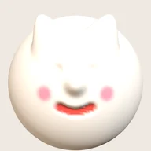
粘土スカルプト粘土を盛って削って、好きな像を作ろう
-
まんじゅう焼印
好きな画像をまんじゅうに焼き付けよう
-
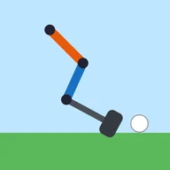
三重振り子ゴルフカオスに暴れるクラブで、どこまで飛ばせるか
-
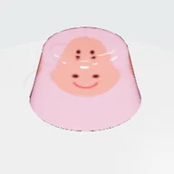
画像ゼリー画像を切り抜いて、ぷるぷるのゼリーにしよう
-
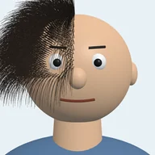
育毛シミュレーターハゲ頭に毛を生やしたり剃ったりし放題
-
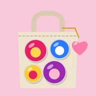
痛バッグメーカー無地のトートを推しで埋めつくせ
-
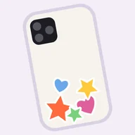
シャカケース切り抜いたシールを入れて、振って遊ぶスマホケース
-
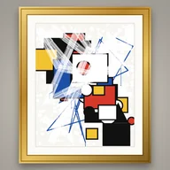
現代アートメーカーなぞるだけで現代アート。額縁に飾ろう
-
画像ふうせん
好きな画像を風船にして割る
-
画像スクイーズ
好きな画像をぷにぷにの3Dにして遊ぼう
-
画像増殖ゲーム
好きな画像を切り抜いて、ぶつけて増やそう
-
メーカー" width="72" height="72" loading="lazy">
ナンバープレート
メーカー好きなナンバープレートを作れる
-
タピオカメーカー
好きな画像がタピオカになる
-
フラフープ
腰を回して、フープを落とすな
-
メーカー" width="72" height="72" loading="lazy">
選挙ポスター
メーカー写真と文字で選挙ポスターを作ろう
-
日の丸メーカー
赤い丸の位置と大きさを合わせて、旗に貼る。
-
どんぶりメーカー
動物を丼に投げ入れて、入った順に名前ができる。
-
1DKループ
毎日タスクをこなしてベッドに戻る。過去の自分にぶつかるな。
-
しりとりスピード
前の言葉につながるカードを、早い者勝ちでドラッグして出す。
-
バーガータワー
タップで具材を落として、どこまで高く積めるか挑戦！
-
円周率デスゲーム
選んだ数字が円周率に出たら死亡。最後の1人まで生き残れ。
-
ウォッカ表面張力
表面張力ギリギリまで注げ。あふれたら死ぬ。
-
ケーキ三等分
ホールケーキを切って、ぴったり三等分できるかな？
-
動肝日
遺伝子で決まる酒の強さ。30日間でどれだけ飲める？
-
麻辣湯チャレンジ
具材をボウルに落として、ぴったり250gを目指そう！
-
猫なわとび
2匹のねこが回すしっぽの大なわを、何回跳べるか挑戦！
見つかりませんでした。